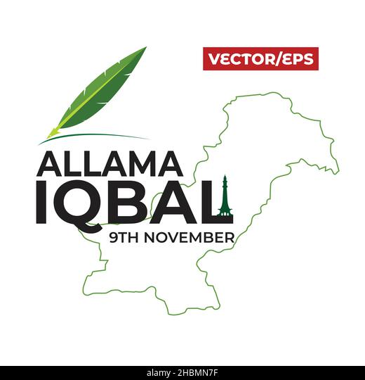
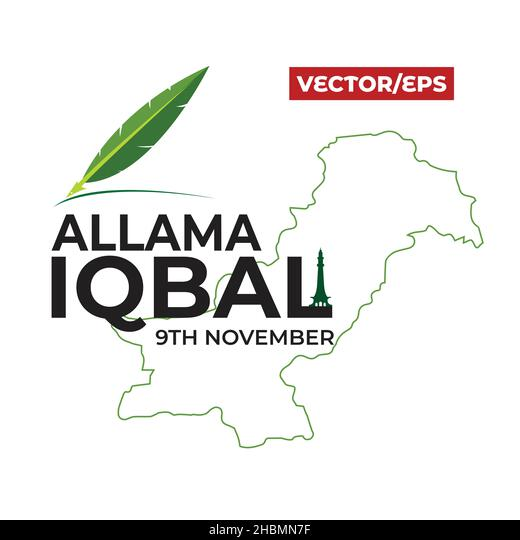

23RD March 1940 was the day of hope and determination of thousands of Muslims of the subcontinent. On this day, the head of All India Muslim League (AIML) Muhammad Ali Jinnah passed a resolution for the creation of a separate federation based on Muslim-majority regions in British India. He successfully won the debate by speaking to the party members in Lahore, he explained that Hindus and Muslims are two separate entities, as they are entirely different in cultural and religious aspects. Pakistan celebrates 23rd March every year with great spirit and enthusiasm. Every year on this day, the government arranges a special event to give respect to this day. The Lahore Resolution Day parade by the armed forces of Pakistan is the main celebration of the event. This day is celebrated in the memory of a lot of struggles put together by our leaders and most importantly, our mentor QUAID E AZAM in the creation of our beloved homeland Pakistan. So the nation must mark this 23rd March not only as Pakistan Day, but as the day for revitalizing and reawakening national resolve to stand firm, strong, and united against all the challenges with courage, enthusiasm, and determination.